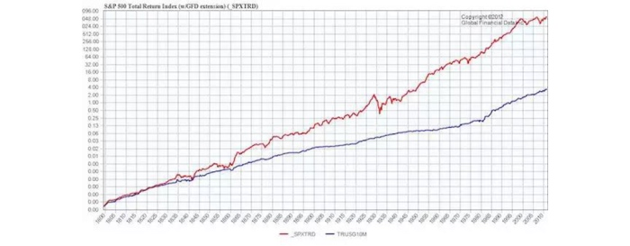
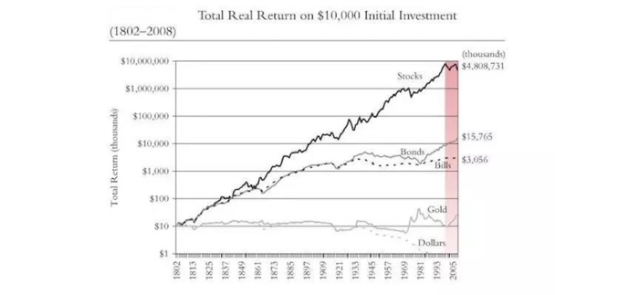
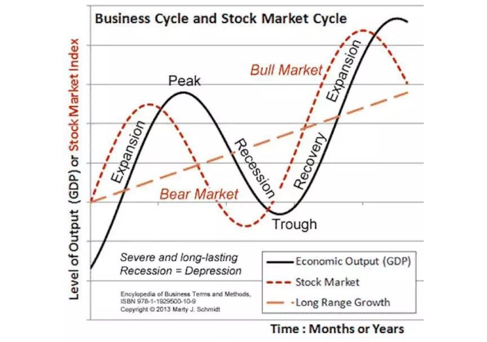
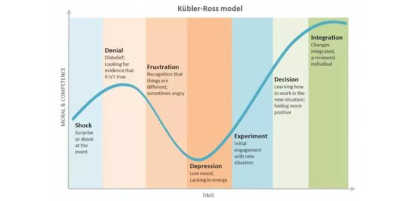
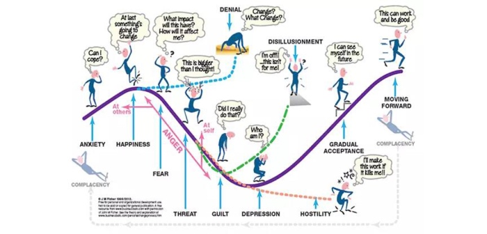

若是我们真的能够看到多个周期，趋势就会明显到不可忽视的地步。
下图是自 1800年 至 2012 年的股票和债券的收益比较图，红色是股票指数 SPXTRD，蓝色是债券指数 TRUSG 10M：

起起落落这么多年，股权投资和债权投资的趋势其实是一样的：都在上升；只不过，虽然债权投资“看起来更稳定”（即波动相对比较小），但涨幅却落后于股权投资。

而这张图望过去就发现，长期来看，投资黄金、美元什么的，比起投资股票简直是弱爆了…… 不管你同不同意，这也是为什么现在越来越多的人认为“股权收益时代来了”的重要原因 —— 其实是早就存在了。
这才几分钟啊！你现在竟然已经可以从趋势之中看到另外更深层次的趋势了…… 人是可以进步的，不仅如此，也有可能进步很快的。并且，还有一些进步可以瞬间完成，而那些没机会想到的人，弄不好一辈子都被无知和不进步耽误且完全不自知。
所以，关注周期，以及多个周期背后显现出来的真正趋势，会给你一个全新且更为可靠的世界和视界。
进而，几乎一切事物，无论是抽象的、具体的，都有它自己的周期。而它们的周期不大可能一致，于是，几乎一切的机会和陷阱都隐藏在周期与周期之间的差异上。
长期看来，你在成长上面的投资一定是上升趋势的。
但是为什么很多人在面对这种注定是上升趋势的事情的时候，依然没有办法坚定不移地行动呢？原因就是：
忍耐不了周期的波动。
即便是一个注定上升趋势的事情，也无法避免过程中的波动。不论是学习还是工作，我们总会遇到不顺心、不如意的情况。不论是不是你的原因，经历过的人都知道，它们是无法规避的。
这个时候，如果是一个没有周期概念的人，他就不能非常淡定地面对暂时的逆境。他会怀疑过去的判断是错误的，自己的投入是无效的，进而为了及时止损，马上选择放弃现有的计划。
你看，其实不用在股市，我们在生活中也经常扮演“韭菜”的角色。
据说 GDP 和股市的周期轮换如下图所示：

还有个“库布乐罗斯改变曲线”（Kübler-Ross change curve）特别好玩。它看起来是这样的：

进而人们发现任何新生事物的发展过程也是差不多的…… （Transition Curve）

于是，我们可以反思这样的现象了：
每次巨大技术变革出现的时候，都有一批投资者死在路上……
为什么呢？他们看到了所谓的“趋势”，却忘记了或者不知道真正的趋势需要一个以上的周期才会真正显现…… 回顾一下历史吧，互联网、NetPC（后来所谓的“云”）等等都是如此。
刚刚闯入交易市场的人，往往并不知道一个冷冰冰的事实：
在牛市里赔钱的人其实很多，在熊市里赚钱的人其实也很多……
你可能会愣一下，在牛市里怎么可能赔钱嘛！牛市里傻子都能赚钱！你仔细观察一下就知道事实并非如此。当然不排除有在牛市里赚到钱的傻子，但也确实有很多人在牛市里担惊受怕追涨杀跌，只因为一个回调就割肉，又因为不甘心而加上杠杆，到最后落得无法诉说的下场。
为什么他们会这样？理由很简单，他们的眼光穿不透周期，于是看不到真正的趋势，能有的只是最肤浅的理解，于是，一切的行动都相当于是乱打乱撞的“无头苍蝇”，事实上比拿着火把穿过火药场还可怕，因为他们拿着火把四处乱窜……
对周期的深入理解，甚至可能影响一个人的性格。在我看来，所谓的不屈不挠，所谓的坚持不懈，更多的时候，只不过是因为对自己正在身处某个周期的哪个位置非常了解，所以才更容易做出决定。
对于没有基本投资常识，以及基础理财知识的人而言，任何一种投资手段都能变为“骗人的玩意儿”。这就好比如果你是一个“韭菜”，不论在哪里，碰到的估计都是镰刀。
所以哪怕是为了不成为“韭菜”，我们也应该好好学习投资理财方面的知识，这可能是对我们来说最重要的“知识变现”了。